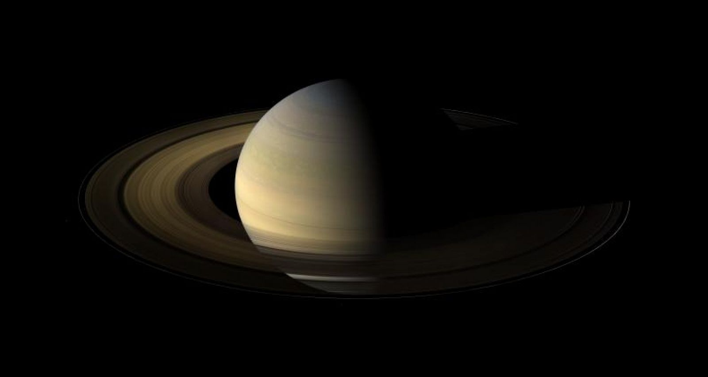

Saturno
Saturno es un planeta de color
amarillento y, junto a Júpiter, el más caliente. Lo más especial de Saturno son sus famosos anillos
compuestos de rocas y agua helada. Alguno de sus satélites naturales son Hyperion e
Iapeto
.
Su nombre es en honor a Saturno, dios romano de la agricultura.
vuelta al Indice